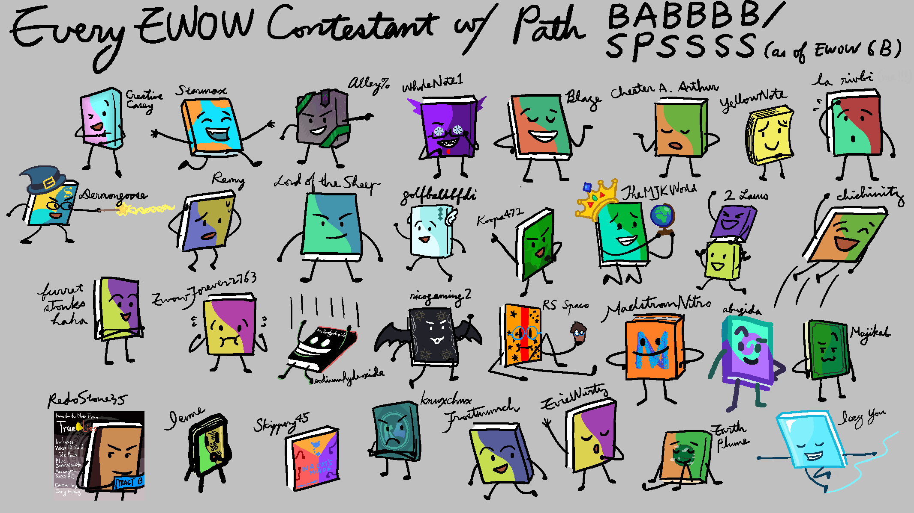
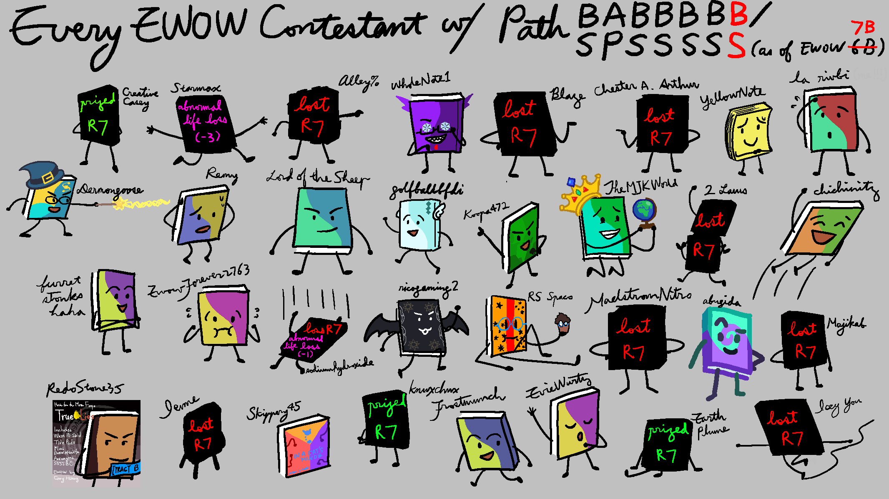
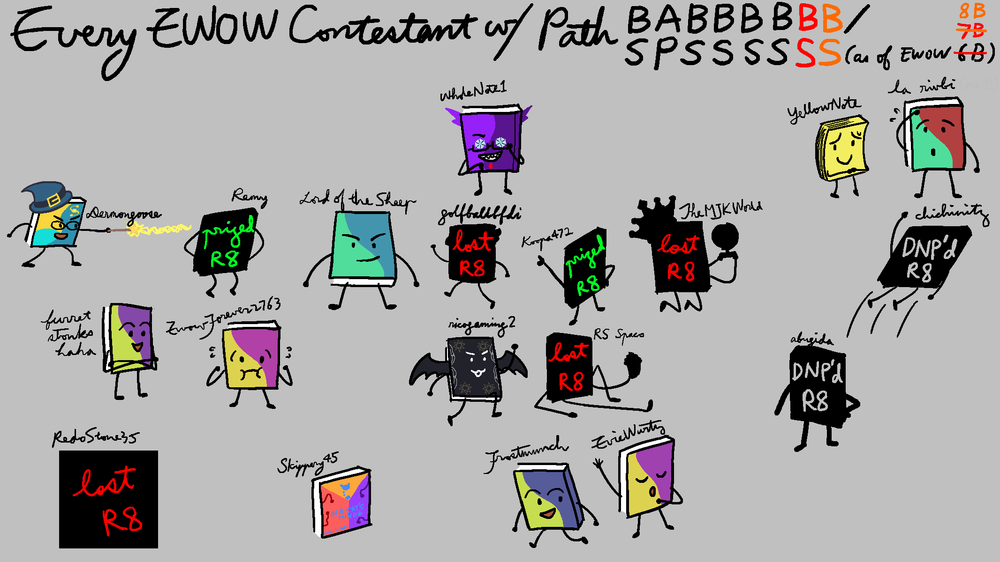
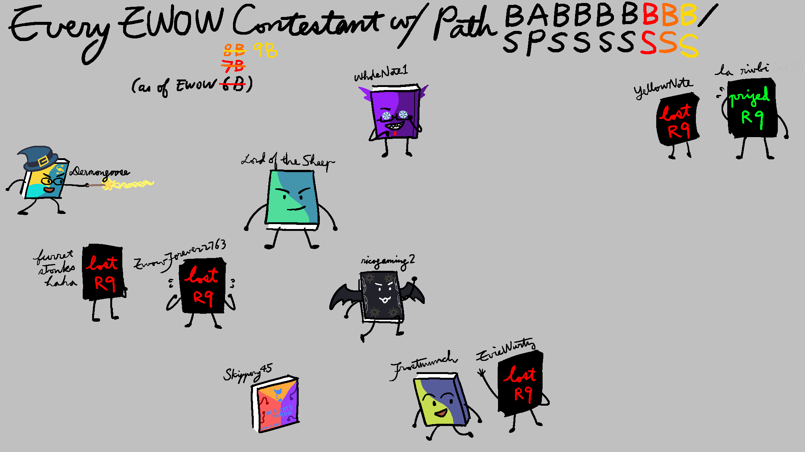
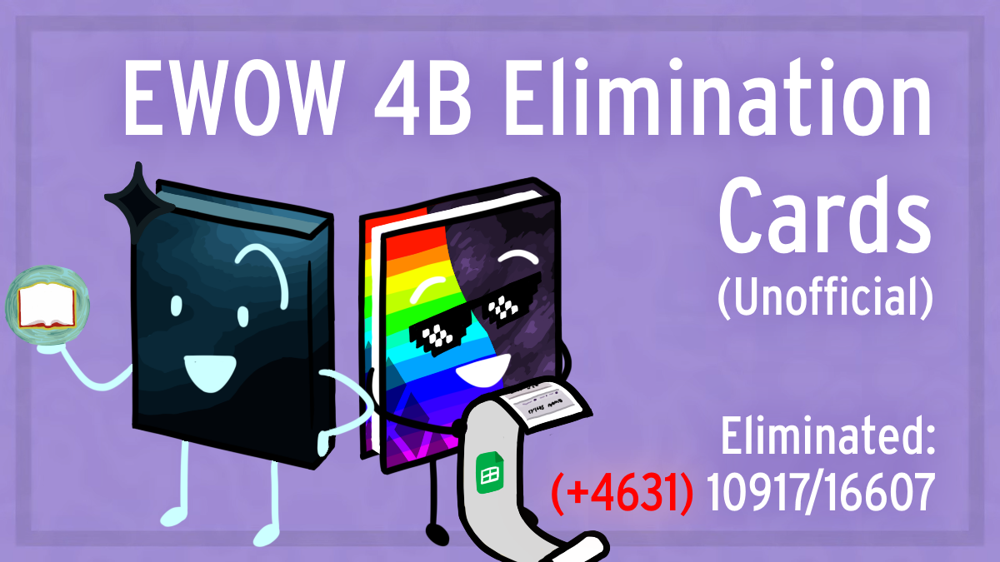
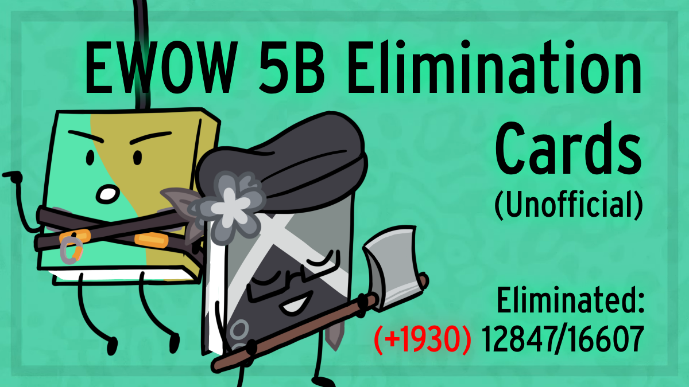
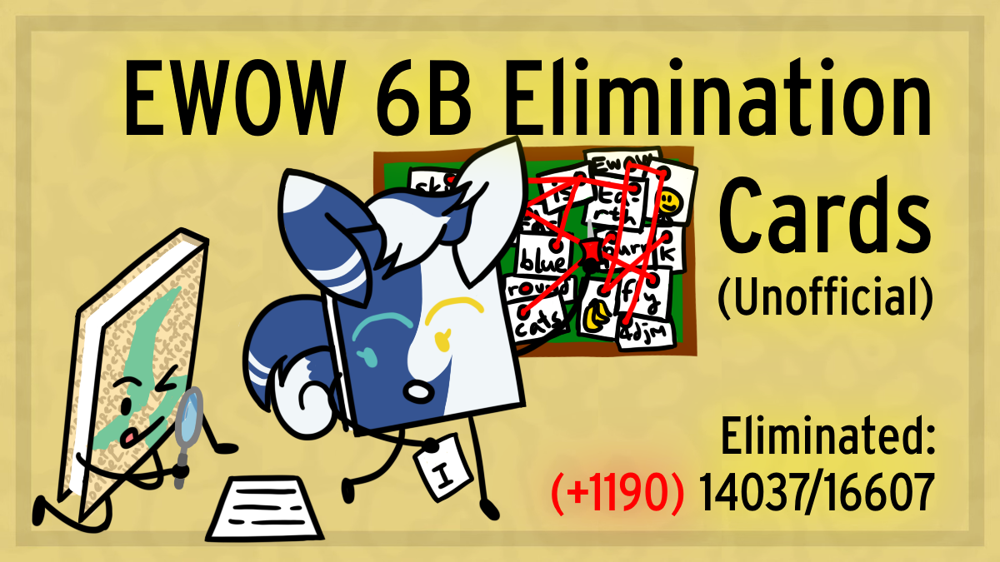
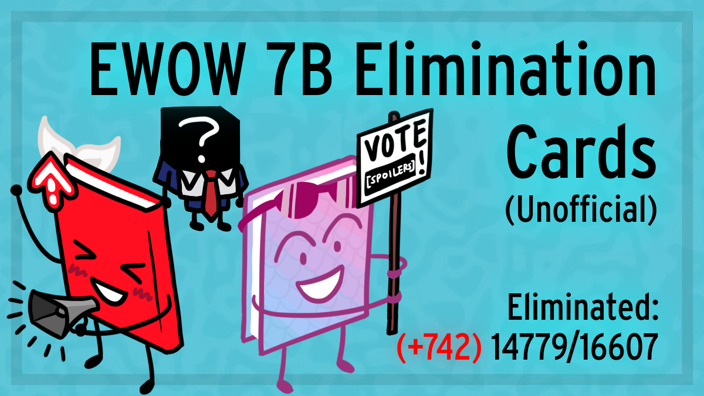
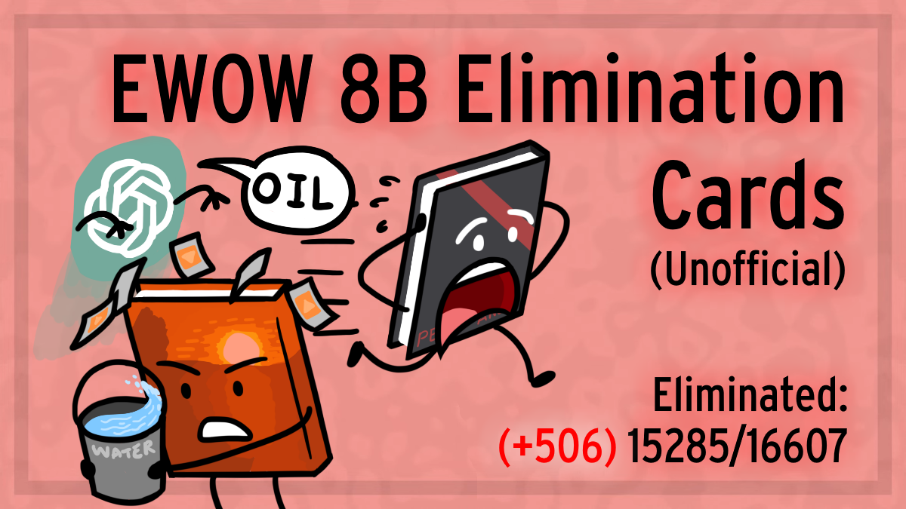
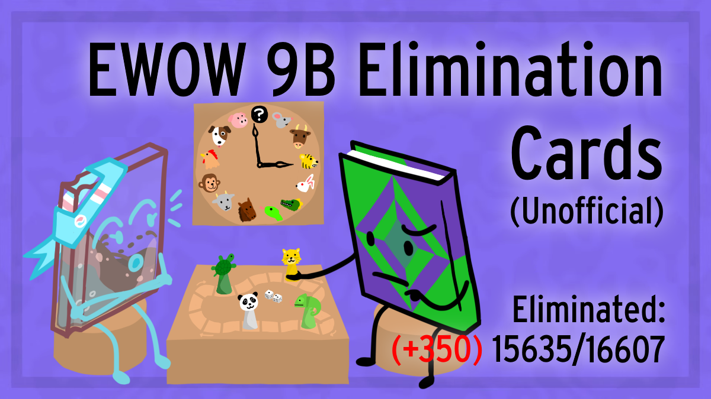

I draw EWOW art sometimes.
My pathmates - Video thumbnails - Other arts
After seeing Ixcors' drawing of PSSSSS-ers and JustAToadBB's drawing of SSSDSS-ers, I decided to do it for my own path (SPSSSS as of R6) since they looked really cool. Also I wanted to see more people drawing their pathmates so I felt like I had to set a precedent.
I drew it in 2024 Sep 17, and it's a bit rushed since I wanted to get it done before 7A's release. The total drawing time is about 5 hours. Also EWOW 7A came out less than 24 hours after this was posted on TC, so nobody new drew their pathmates in a comparable scale :(

EWOW 7B update:

EWOW 8B update:

EWOW 9B update (I left the path by prizing that round):

The elimination cards videos originally had their thumbnail arts taken directly from the EWOW episodes, however it's not a good practice since I never asked for permission (I'm sorry EWOW team). One day I was taking a stroll and thought of redrawing the thumbnail arts with the episode hosts doing something relevant to the prompt. So I redrew them all within a few days. Each thumbnail art took about 1-2 hours, depending on how complicated the hosts' book designs are.
You can see the thumbnail arts as the result of me tryharding while the pathmate arts as me rushing.
Also I didn't remake the EWOW 3B elimination cards' thumbnail, Scary Cary is too iconic to change.






EWOW 9B elimination cards' background texture. Took me less than 3 hours.
Feel free to use, just don't claim it's yours.